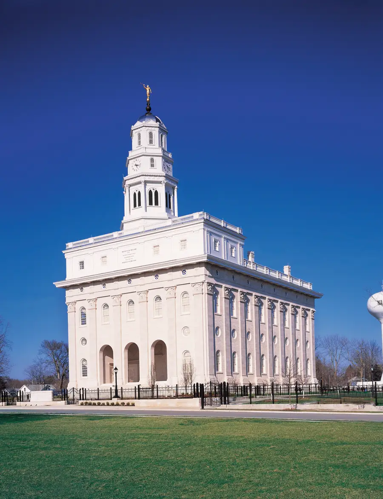

Os Templos
Lugares sagrados onde as famílias podem ser unidas para sempre e fazer convénios com Deus.
Lugares sagrados onde as famílias podem ser unidas para sempre e fazer convénios com Deus.
Para A Igreja de Jesus Cristo dos Santos dos Últimos Dias, os templos são os edifícios mais sagrados da terra. Não são capelas onde se realizam os serviços de domingo — são lugares especiais dedicados a ordenanças sagradas que unem as famílias não só nesta vida, mas também na eternidade.
Nas Escrituras, os templos sempre foram o lugar onde Deus se encontra com os Seus filhos. Desde o tabernáculo de Moisés até ao templo de Salomão, o templo representa a presença de Deus na terra.

Nos templos realizam-se ordenanças sagradas que não podem ser realizadas em mais nenhum lugar. Estas ordenanças incluem:
Acreditamos que a família pode ser eterna. O amor que sentimos pelos nossos entes queridos não tem de terminar com a morte. No templo, uma família pode ser «selada» pelo poder do sacerdócio — o que é ligado na terra fica ligado no céu.
Esta doutrina dá uma perspetiva completamente diferente à perda, à dor e às relações familiares. Não se trata apenas de viver juntos nesta vida — trata-se de estar juntos para sempre.

Os templos só estão abertos ao público quando são recém-construídos ou renovados, durante um período de «portas abertas». Depois disso, só os membros da Igreja que vivem os seus princípios podem entrar. No entanto, os terrenos do templo estão sempre abertos e muitos têm centros de visitantes onde qualquer pessoa pode saber mais.
Se tem curiosidade sobre os templos ou quer saber mais sobre as ordenanças que neles se realizam, teremos todo o gosto em explicar-lhe.
Fale connosco e explicaremos tudo sobre os templos, as suas ordenanças e porque são tão significativos para nós.
Quero saber mais